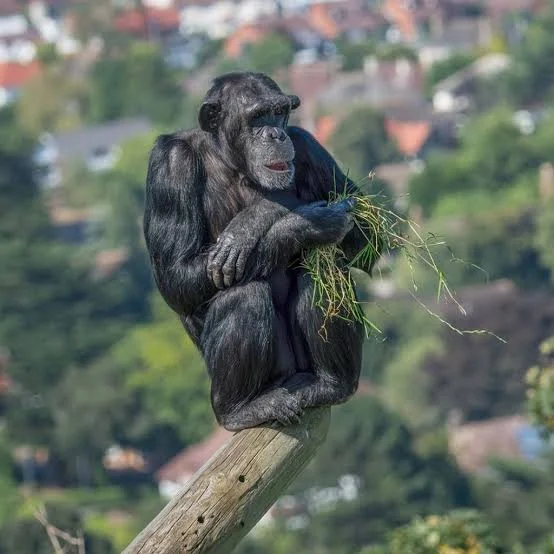

Chipmanzee

The chimpanzee (/tʃɪmpænˈzi/; Pan troglodytes), also simply known as the chimp, is a species of great
ape native to the forests and savannahs of tropical Africa. It has four confirmed subspecies and a
fifth proposed one. When its close relative the bonobo was more commonly known as the pygmy
chimpanzee, this species was often called the common chimpanzee or the robust chimpanzee.
The chimpanzee and the bonobo are the only species in the genus Pan. Evidence from fossils
and DNA sequencing shows that Pan is a sister taxon to the human lineage and is thus humans'
closest living relative.(google.com)
Back to home